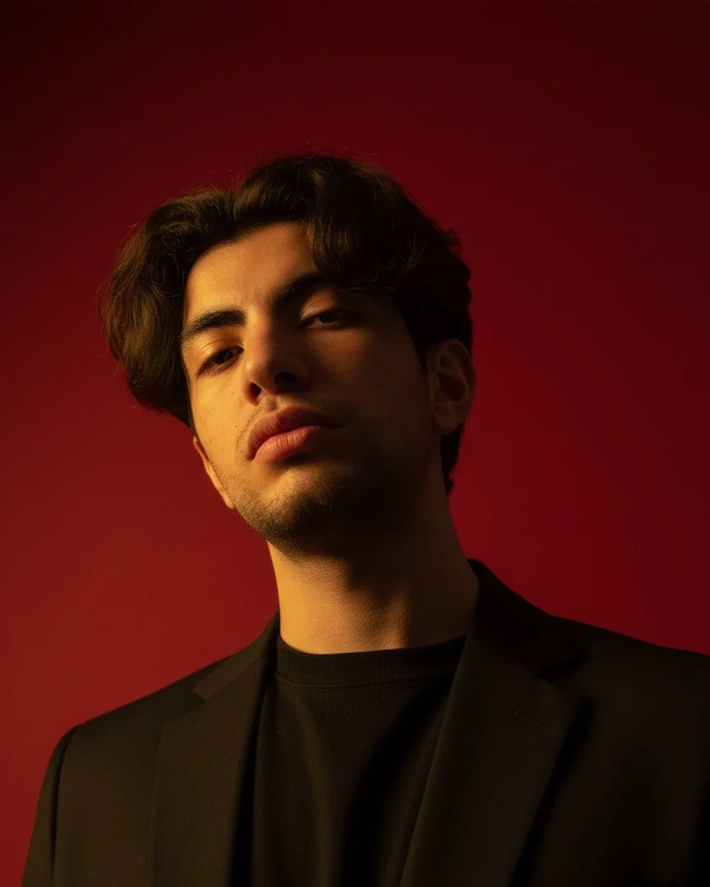

Staj ve junior pozisyonlara açığım
Muhammed Emin Coşkun
Oyun tasarımcısı ve Red Panda Entertainment'ın kurucusu. Mekanikler, oyun sistemleri ve oyuncuyu "bir daha" dedirten döngüler tasarlıyorum.
01Hakkımda
Kahramanmaraş Sütçü İmam Üniversitesi'nde Dijital Oyun Tasarımı 3. sınıf öğrencisiyim ve bağımsız stüdyom Red Panda Entertainment'ı yürütüyorum. En çok mekanik tasarımı ve oyun sistemleri üzerine çalışmayı seviyorum: fikirleri hızlıca oynanabilir hâle getirir, sayılarla dengelerim. Mortis Loop'un demosunu Steam'de yayınladım.
- Okul
- KSÜ · Dijital Oyun Tasarımı
- Stüdyo
- Red Panda Entertainment, kurucu
- Konum
- İzmir · uzaktan çalışmaya açık
- Şu an
- Mortis Loop ve FIRUZE
UnityC#BlenderAsepritePhotoshopGameMakerMachinations.ioSteamworks
02Oyunlar
03İletişim
Birlikte bir oyun yapalım.
Staj, junior pozisyon ya da bir proje için yazabilirsin.
coskunmuhammed090@gmail.com